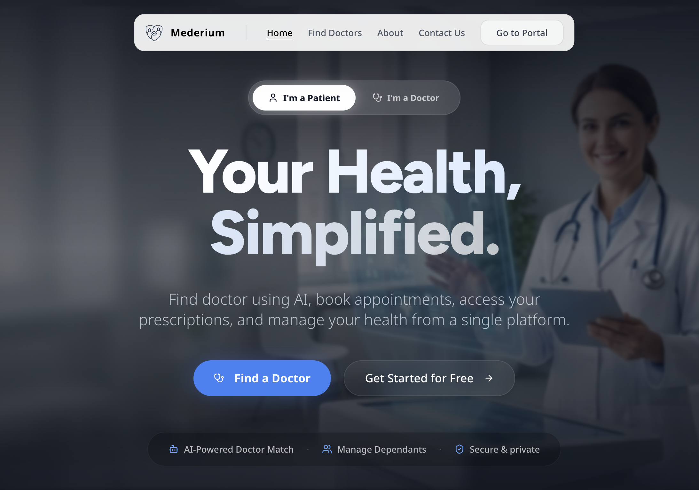
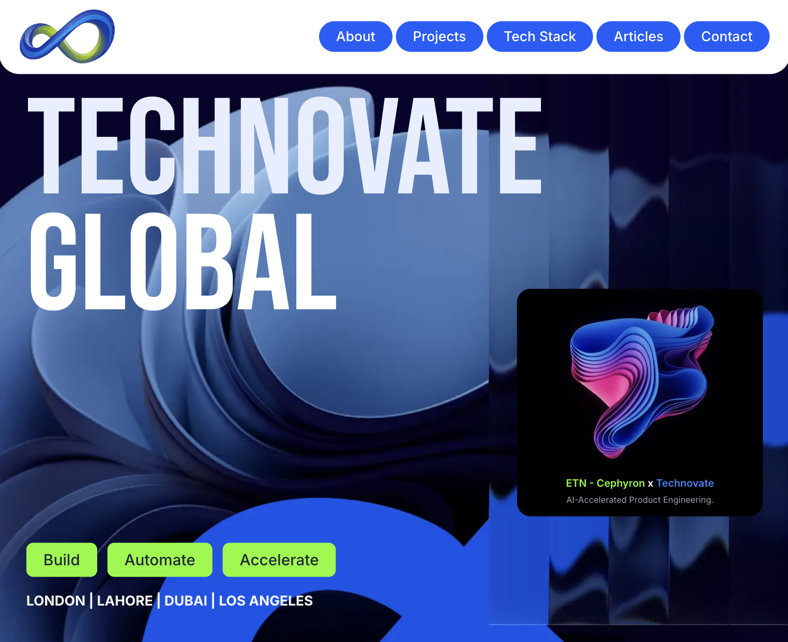
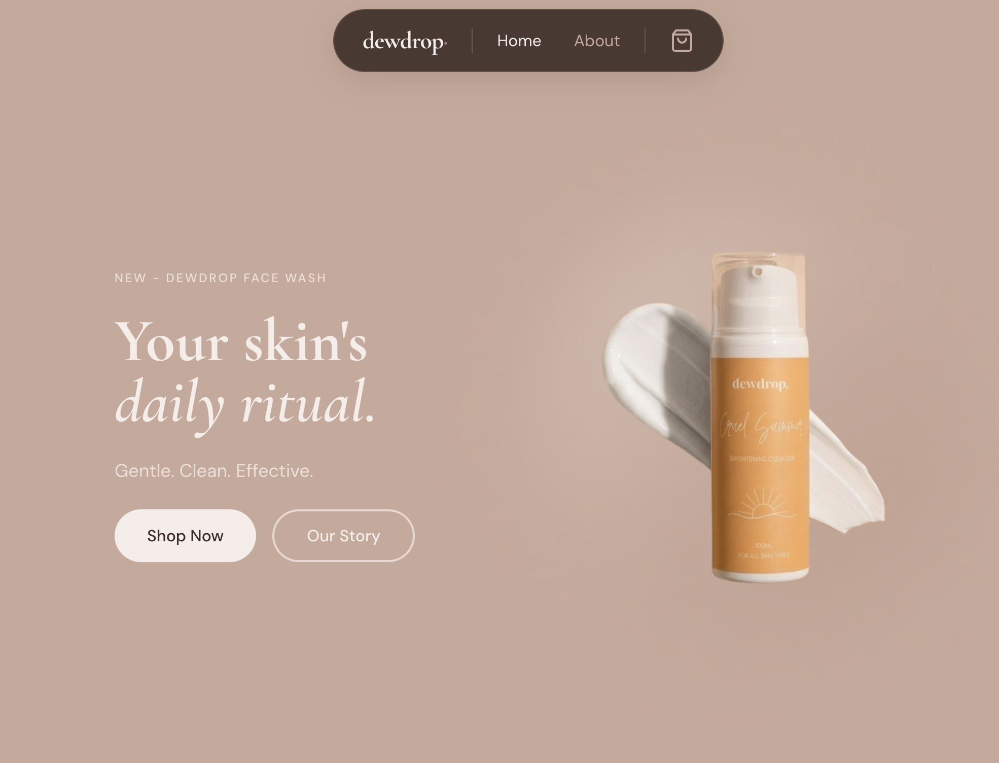

Crafting Intelligent
Software Solutions
CS Junior from LUMS with deep expertise in Machine Learning research, Agentic AI, and Full-Stack Development.
About Me
I am a research-driven Software Engineer with a passion for Machine Learning and AI. I am a CS Junior at LUMS as a Merit Scholarship Recipient, with advanced coursework spanning ML, AI Foundations, Deep Vision-Language Models, and more.
Professionally, I've built Power BI dashboards analysing 100,000+ properties at DevClan, developed responsive CRM tools for the US-based mortgage company LendingPad, and served as a Teaching Assistant at LUMS for Deep Learning for MS AI students.
Industry & Personal Projects

Mederium
Platform for doctors and hospitals to conduct secure, commission-free consultations. Features Voice AI that lets doctors dictate a simple voice note and automatically generates a complete, structured prescription, segmented into medicines, clinical notes, patient history, and ICD-10 coded diagnoses.
Visit Website
Technovate Global
Designed and developed the marketing website for Technovate Global, a software house offering custom software development, AI solutions, and digital transformation services to clients worldwide.
Visit Website
Dewdrop
Built the full e-commerce platform for Dewdrop, a Pakistani skincare brand, including a product storefront, shopping cart, Cash on Delivery checkout flow, order management, and a custom admin panel for inventory, order tracking, and customer data.
Visit WebsiteAI Industry Projects
Recruiter+
AI Hiring Assistant · RAG PipelineEnd-to-end AI recruitment platform with a dual-database architecture (PostgreSQL + Qdrant) that ingests CVs asynchronously, performs semantic search, and synthesises explainable recruiter insights — with automated LinkedIn enrichment running entirely in the background.
Architecture Highlights
- Async ingestion: PDF → LlamaParse → LLM JSON extraction → dual-DB indexing in seconds
- Real-time pipeline for individual uploads; Batch pipeline groups 500 CVs per job via OpenAI Batch API, cutting LLM costs by 50%
- Section-aware chunking (MarkdownHeaderTextSplitter) + entity resolution assigns one
candidate_idacross multiple CV variants - Oversampling & deduplication: queries top-50 chunks from Qdrant, deduplicates to top-5 unique humans by
candidate_id - Small-to-Big retrieval: chunk-level semantic precision → full CV + LinkedIn fetched from Postgres for explainable LLM synthesis with inline citations
- Automated LinkedIn scraping via Apify triggered on upload; re-scraped on shortlist/profile view and refreshed every 6 months via cron
Tech Stack
TaxAiders
AI Tax Automation · RAG PipelineAI-powered tax automation system for UK clients integrating OCR, a RAG pipeline over UK tax codes and HMRC guidelines, omnichannel support routing, and a compliance engine that flags errors before a human ever sees the file.
Architecture Highlights
- AWS Textract + custom NER model extracts structured tax variables (National Insurance numbers, income thresholds) from uploaded PDFs
- RAG pipeline over UK tax codes (Amazon OpenSearch vector DB) powers a 24/7 multilingual GPT-4o chatbot with client-history context
- AI Compliance Engine: deterministic rule-based Python for hard thresholds + LLM for semantic gap detection ("missing utility bill for home office claim")
- Smart escalation: AI triage → Zendesk routing → live agent receives drafted AI response + client issue summary for fast resolution
- Proactive upsell alerts: Dynamic Tax Calculator triggers Salesforce notification when a client qualifies for a tax optimisation strategy
Tech Stack
AeroSQL
NLP-to-SQL · Agentic AINext-generation NLP-to-SQL architecture with a semantic prompt cache, RBAC security layer, knowledge graph–powered JOIN accuracy, a self-correcting validation loop, and multi-model routing designed for enterprise-scale concurrent query throughput.
Architecture Highlights
- HNSW semantic cache: ≥99.9% match → instant return; 90–99% → Query Tweak Agent swaps variables in cached SQL; <90% → full pipeline
- RBAC security: cache hits validated in Python against role access matrix; cache misses use Milvus metadata pre-filtering to physically starve the LLM of unauthorised schema
- Neo4j knowledge graph stores the ER map of the client DB — guarantees mathematically correct JOIN paths injected directly into the prompt
- Multi-model routing: NVIDIA NIM (Llama/Qwen) for lightweight agents (intent, table, column-prune, tweak); GPT-4o strictly for final SQL generation
- Self-correcting loop: LangGraph executes SQL as an EXPLAIN query; on error it appends the exact trace and loops GPT-4o to fix its own mistake
- K8s HPA scales pods on HTTP traffic spikes; NVIDIA NIM continuous in-flight batching groups concurrent prompts at the token level on-GPU
Tech Stack
Academia & Research
Relevant Coursework
Core Skills
Machine Learning & AI
- PyTorch & LangChain
- RAG & Agentic AI
- Model Compression & FL
- VAE, CLIP & DDPM
- Speech-to-text / TTS
Languages & Frameworks
- Python
- C / C++
- JavaScript (MERN)
- .NET
- HTML / CSS
Tools & Concepts
- Git / GitHub
- Power BI & Data Analytics
- TCP/IP & Sockets
- Multithreading
- Network Centric Computing
Let's build intelligent systems together
I'm exploring opportunities in AI, Machine Learning, and Software Engineering. Let's start a conversation.
Email Me 👋